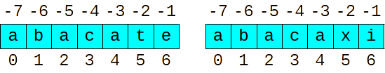

Strings são colocadas entre aspas duplas ou simples. Se colocadas entre 3 aspas (duplas ou simples), podem vir em várias linhas. Exemplos:
a = 'hello'
b = "world"
c = '''a multiple
line string'''
d = """More
multiple"""
print(a, b, c, d, sep="\n\n")As classes str, list, tuple e range são conhecidas como sequências, que são classes iteráveis que compartilham das operações de indexação (com os colchetes).
Considere as seguintes variáveis:
string1 = "abacate"
string2 = "abacaxi"Strings são como listas, onde cada caractere é como se fosse um elemento da lista, que está em seu respectivo índice. No python podemos usar índices negativos para acessar elementos de trás para frente, como veremos.
Eis as principais operações suportadas por strings:
| Operação | Exemplo | Explicação |
|---|---|---|
| Concatenação |
|
Junta duas ou mais strings. |
| Repetição |
|
Repete uma string determinadas vezes. |
| Indexação |
|
Acessa caracteres individuais da string. Se informar um índice negativo, acessa de trás para frente, sendo que o último caractere começa do índice -1. |
| Fatiamento |
|
Extrai uma substring, começando do índice i, indo até o índice j-1, pulando de k em k índices. |
|
Se omitido o pulo, também denominado passo, o padrão é de 1 em 1. | |
|
Se omitido o primeiro índice, o padrão é começar do 0. | |
|
Se omitido o segundo índice, o padrão é terminar no último índice. | |
|
Se o primeiro índice for maior ou igual ao segundo índice, retorna uma string vazia. | |
|
Os índices também podem ser negativos. | |
|
Se o pulo for negativo, os caracteres são extraídos de trás para frente. No caso, o primeiro índice precisa ser maior que o segundo índice para não retornar uma string vazia. | |
| Continência |
|
Verifica se uma string está contida em outra. |
| Igualdade |
|
Verifica se uma string é igual ou diferente a outra string. |
| Comparação |
|
Compara lexicograficamente duas strings. |
Eis os principais métodos de strings. Observe que como uma string é imutável, as transformações na verdade são a criação de uma nova string.
| Método | Exemplo | Explicação |
|---|---|---|
|
|
Deixa apenas a primeira letra maiúscula. |
|
|
Converte todas as letras para minúsculo. |
|
|
Alterna as letras entre maiúsculo e minúsculo. |
|
|
Deixa maiúscula apenas a primeira letra de cada palavra. |
|
|
Converte todas as letras para minúsculo. |
|
|
Conta quantas vezes sub ocorre na string, começando de start, indo até end, se informados. |
|
|
Verifica se a string termina com suffix. |
format